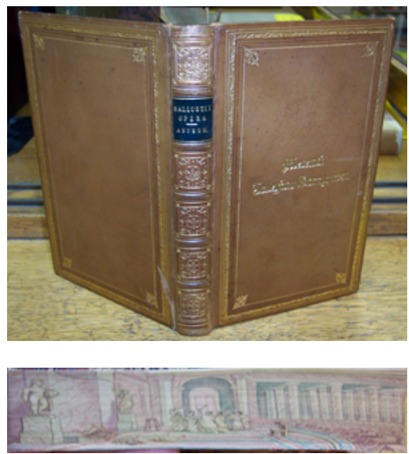
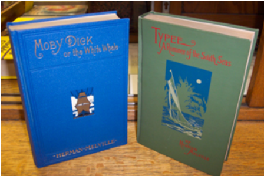
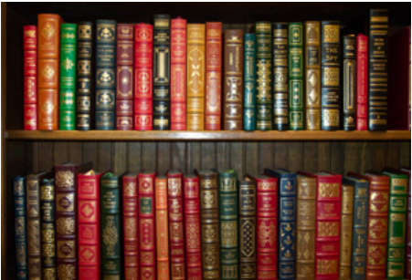
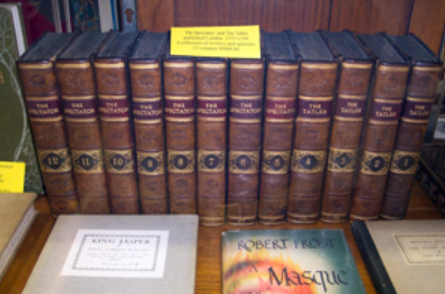
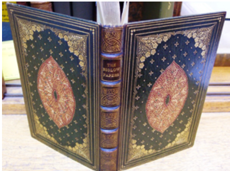
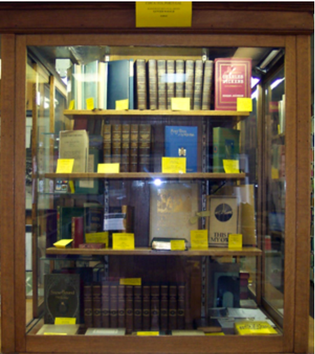

The below items are indicative of the kind of special items that we routinely have availble. The specific items shown are no longer available. However, we invite you to contact us via phone or email to see what special items we have on hand right now. Better yet, come by and enjoy the discovery of your own special treasure.
The C. Crispi Sallusti Opera by Classics scholar Charles Anthon (1852).Top shows the excellent binding, bottom shows the marvelous fore-edge painting of a Roman scene.
Moby Dick and Typee by Herman Melville (1922 editions)
Over 100 volumes from the Franklin Mint Classics series.
A 12-volume collection of reviews and opinions as published in The Spectator and The Tattler, London (1757-9)
The satirical poems The Biglow Papers by James Russell Lowell (1848, 1st edition). Beautiful leather binding with gorgeous ornate gold tooling and leather inlays.
Looking for something else? Come in and browse our case of featured volumes. Great gifts for yourself, a friend, or a loved one!